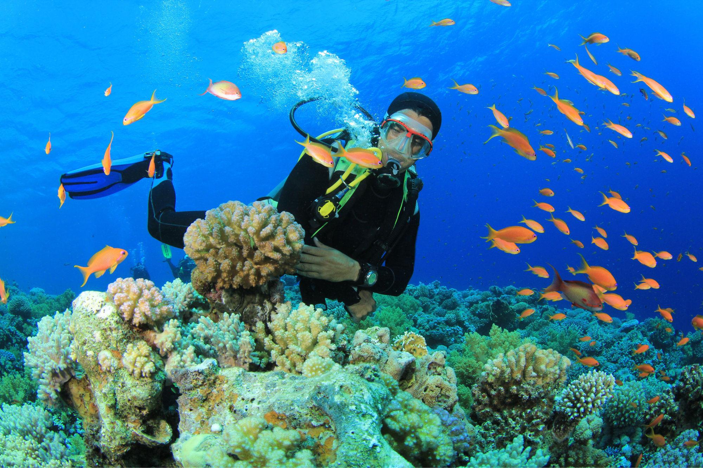

Sea Diving
About :
Scuba diving is a mode of underwater diving in which a scuba diver
uses a self-contained underwater breathing apparatus (scuba) to
breathe underwater.A scuba diver primarily moves underwater by
using fins attached to the feet,but external propulsion can
be provided by a diver propulsion vehicle, or a sled pulled
from the surface. Other equipment includes a dive mask to improve
underwater vision, a protective dive suit, equipment to control buoyancy,
and equipment related to the specific circumstances and purpose of the dive.

Reasons for diving
seadiving is good for health and we get many benifits like controlled breathing, physical fitness, travelling to warmer climates in hot summer, interacting with marine life, and the feel good factor.scuba divers learn to communicate underwater without speaking.
Safety Measures
Get proper training
never dive alone
Be in good physical shape
Don't hold your breathe
Ascend slowly and with control
Check your equipment
Relax, Plan your dive and dive your plan
Problems caused
There are three major injuries caused due to seadiving are Barotrauma, Decompression sickness, Nitrogen nacrosis.Chance of dying in seadiving is 1 in 34,400.